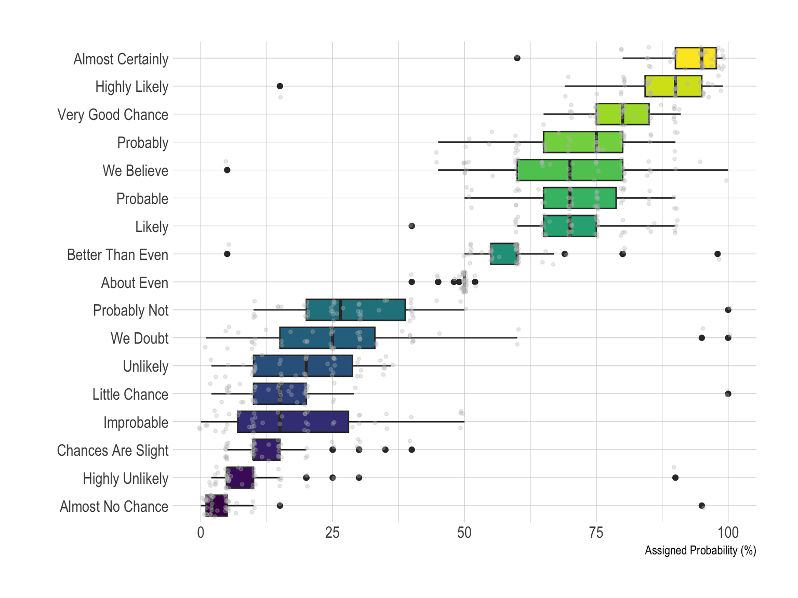
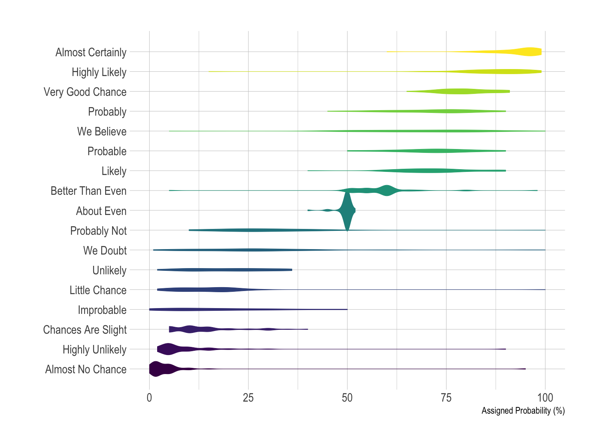
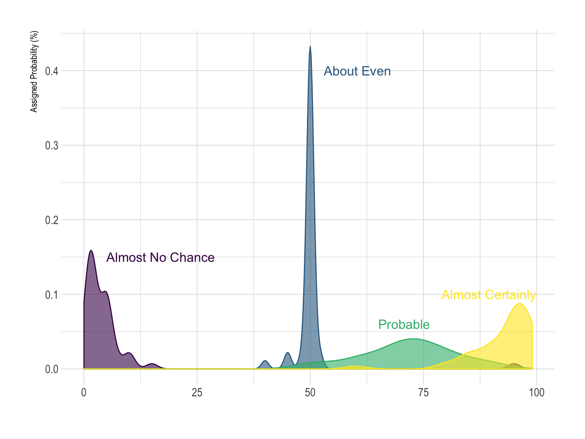
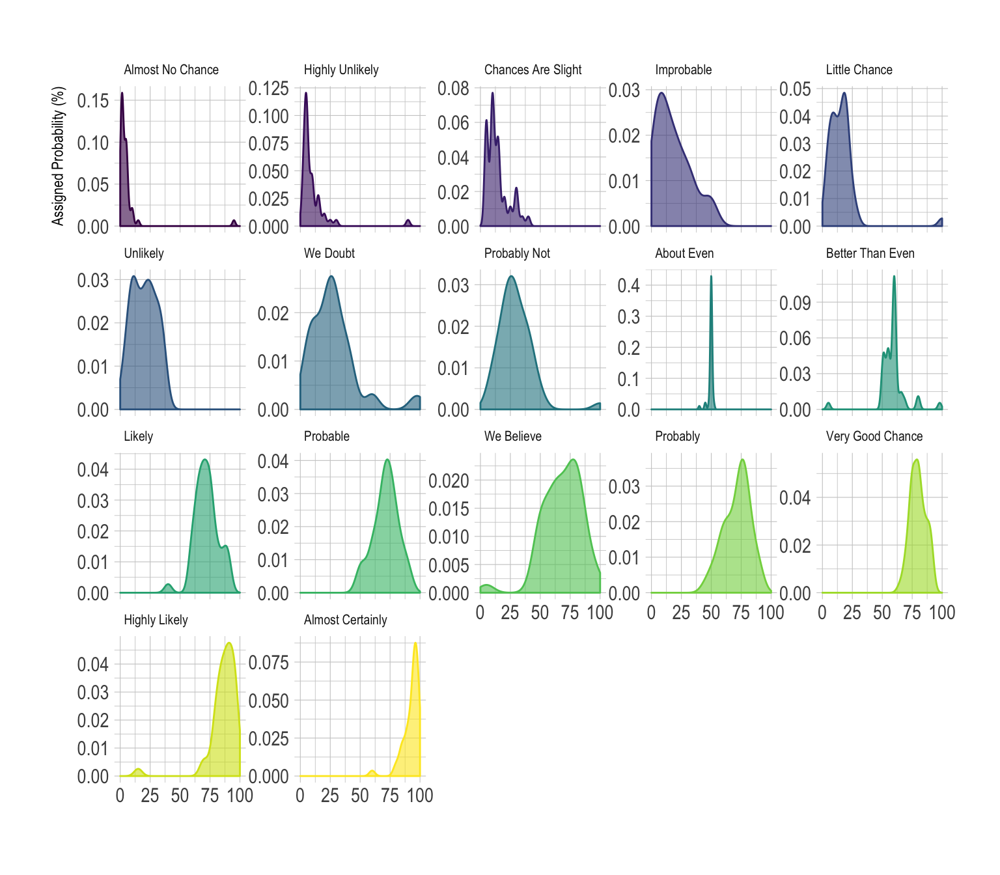
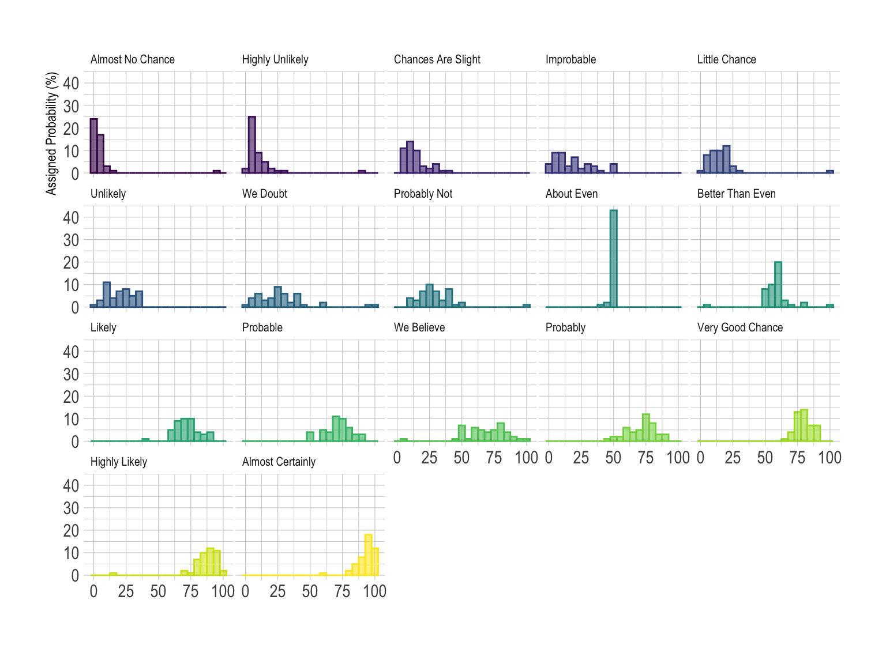
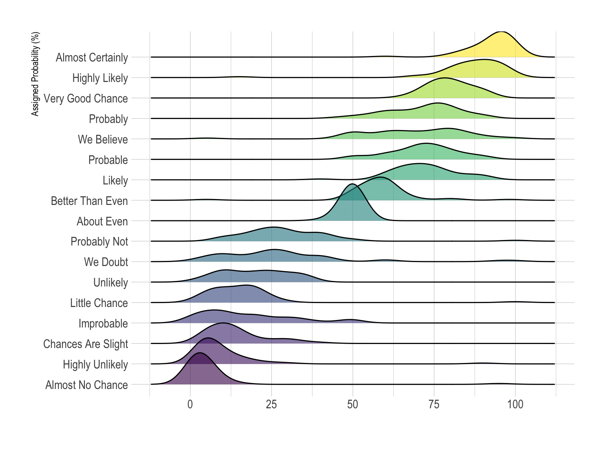

Perception of probability
A few data analytics ideas from
Data-to-Viz.com


This document gives a few suggestions to analyse a dataset
composed by a numeric and a categoric variable.
On the /r/samplesize thread of
reddit, questions like What probability would you assign to the
phrase “Highly likely” were asked. Results allow to understand how
people perceive probability vocabulary.
Disclaimer: This idea originally comes from a
publication of the CIA
which resulted in this figure.
Then, Zoni Nation cleaned
the reddit dataset and built graphics with R. I
heavily rely on his work in the folowing.
# Libraries
library(tidyverse)
library(hrbrthemes)
library(kableExtra)
options(knitr.table.format = "html")
library(viridis)
# Load dataset from github
data <- read.table("https://raw.githubusercontent.com/zonination/perceptions/master/probly.csv", header=TRUE, sep=",")
data <- data %>%
gather(key="text", value="value") %>%
mutate(text = gsub("\\.", " ",text)) %>%
mutate(value = round(as.numeric(value),0))
# show data
data %>% sample_n(8) %>% kable(row.names = FALSE) %>%
kable_styling(bootstrap_options = "striped", full_width = F)| text | value |
|---|---|
| We Doubt | 33 |
| About Even | 50 |
| Almost No Chance | 1 |
| Highly Unlikely | 5 |
| Almost No Chance | 2 |
| Improbable | 3 |
| Chances Are Slight | 40 |
| We Doubt | 10 |
The most common way to represent that kind of dataset is probably the boxplot. It summarizes the main features of each group and thus allow an efficient of distributions. Mind a few pitfalls tough. It often makes sense to order groups to make the chart easier to read. If the group labels are long, consider a horizontal version that makes the labels readable. Last but not least, note that the boxplot hides information like the underlying distribution of the sample size. Several workarounds exist, like showing the individual data points with unobstrusive dots.
data %>%
mutate(text = fct_reorder(text, value)) %>%
ggplot( aes(x=text, y=value, fill=text)) +
geom_boxplot() +
geom_jitter(color="grey", alpha=0.3, size=0.9) +
scale_fill_viridis(discrete=TRUE) +
theme_ipsum() +
theme(
legend.position="none"
) +
coord_flip() +
xlab("") +
ylab("Assigned Probability (%)")
The violin plot is often a good alternative to boxplot as long as your sample size is big enough. It is very close to the boxplot, thus the advices above still apply, except that it describes group distributions more accurately by definition. If you have many groups (like here), it is probably not the best option since each violin tends to be very slim, what makes hard to visualize the distribution. In this case a good alternative is the ridgeline plot thatis described a bit further in this post.
data %>%
mutate(text = fct_reorder(text, value)) %>%
ggplot( aes(x=text, y=value, fill=text, color=text)) +
geom_violin(width=2.1, size=0.2) +
scale_fill_viridis(discrete=TRUE) +
scale_color_viridis(discrete=TRUE) +
theme_ipsum() +
theme(
legend.position="none"
) +
coord_flip() +
xlab("") +
ylab("Assigned Probability (%)")
If you have just a few group, you can compare them on the same density plot. Here only four groups were selected to illustrate this idea. With more groups, the graphic would get cluttered and hard to read. The number of group you can show on the same density plot depends of your data: if the group overlap, few, if their distribution is really different, a bit more.
# A dataframe for annotations
annot <- data.frame(
text = c("Almost No Chance", "About Even", "Probable", "Almost Certainly"),
x = c(5, 53, 65, 79),
y = c(0.15, 0.4, 0.06, 0.1)
)
# Plot
data %>%
filter(text %in% c("Almost No Chance", "About Even", "Probable", "Almost Certainly")) %>%
mutate(text = fct_reorder(text, value)) %>%
ggplot( aes(x=value, color=text, fill=text)) +
geom_density(alpha=0.6) +
scale_fill_viridis(discrete=TRUE) +
scale_color_viridis(discrete=TRUE) +
geom_text( data=annot, aes(x=x, y=y, label=text, color=text), hjust=0, size=4.5) +
theme_ipsum() +
theme(
legend.position="none",
panel.spacing = unit(0.1, "lines"),
strip.text.x = element_text(size = 8)
) +
xlab("") +
ylab("Assigned Probability (%)")
However if you have more than ~4 groups this technique does not work: the graphic would become too cluttered. Thus it is a better practice to use small multiple:
data %>%
mutate(text = fct_reorder(text, value)) %>%
ggplot( aes(x=value, color=text, fill=text)) +
geom_density(alpha=0.6) +
scale_fill_viridis(discrete=TRUE) +
scale_color_viridis(discrete=TRUE) +
theme_ipsum() +
theme(
legend.position="none",
panel.spacing = unit(0.1, "lines"),
strip.text.x = element_text(size = 8)
) +
xlab("") +
ylab("Assigned Probability (%)") +
facet_wrap(~text, scale="free_y")
This is a good way to study the distribution of each group separately. However, it makes it hard to compare groups together since they do not all share the same Y axis. All depends on what is the question you are trying to answer.
The histrogram is very close from density plots. Thus, all the remarks above probably apply here as well.
data %>%
mutate(text = fct_reorder(text, value)) %>%
ggplot( aes(x=value, color=text, fill=text)) +
geom_histogram(alpha=0.6, binwidth = 5) +
scale_fill_viridis(discrete=TRUE) +
scale_color_viridis(discrete=TRUE) +
theme_ipsum() +
theme(
legend.position="none",
panel.spacing = unit(0.1, "lines"),
strip.text.x = element_text(size = 8)
) +
xlab("") +
ylab("Assigned Probability (%)") +
facet_wrap(~text) Note that here the Y scale is the same for each group, unlike the precedent example on density plot.
In this example, the best option is probably the ridgeline plot. It shares all the benefits of a violinplot and avoid to loose space since there is an overlap between groups. Both individual distribution and comparison between groups are described efficiently.
library(ggridges)
data %>%
mutate(text = fct_reorder(text, value)) %>%
ggplot( aes(y=text, x=value, fill=text)) +
geom_density_ridges(alpha=0.6, bandwidth=4) +
scale_fill_viridis(discrete=TRUE) +
scale_color_viridis(discrete=TRUE) +
theme_ipsum() +
theme(
legend.position="none",
panel.spacing = unit(0.1, "lines"),
strip.text.x = element_text(size = 8)
) +
xlab("") +
ylab("Assigned Probability (%)")
You can learn more about each type of graphic presented in this story in the dedicated sections. Click the icon below:
Data To Viz is a comprehensive classification of chart types organized by data input format. Get a high-resolution version of our decision tree delivered to your inbox now!

A work by Yan Holtz for data-to-viz.com
{kind=link}